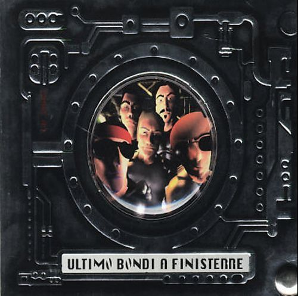

Gulp! (1985)
- Barbazul versus el amor letal
- La bestia pop
- Roto y mal parado
- Pierre, el vitricida
- Unos pocos peligros sensatos
- Yo no me caí del cielo
- Te voy a atornillar
- Superlógico
- Ñam fi frufi fali fru
- El infierno está encantador esta noche
- Criminal Mambo
- Pianito - Jam (pista oculta)

Oktubre (1986)
- Fuegos de octubre
- Preso en mi ciudad
- Música para pastillas
- Semen-Up
- Divina Tv. Führer
- Motor psico
- Jijiji
- Canción para naufragios
- Ya nadie va a escuchar tu remera

Un baión para el ojo idiota (1988)
- Masacre en el puticlub (video)
- Noticias de ayer
- Aquella solitaria vaca cubana
- Todo preso es político
- Vencedores vencidos
- Vamos las bandas
- Ella debe estar tan linda
- Todo un palo
¡Bang! ¡Bang! Estás liquidado (1989)
- Héroe del whisky
- Rock para los dientes
- La parabellum del buen psicópata
- Un Pacman en el Savoy
- Nadie es perfecto
- Esa estrella era mi lujo
- Maldición, va a ser un día hermoso
- Ropa sucia
- Nuestro amo juega al esclavo
La mosca y la sopa (1991)
- Toxi-Taxi
- Fusilados por la cruz roja
- Un poco de amor francés
- Mi perro Dinamita
- Blues de la artillería
- Tarea fina
- El pibe de los astilleros
- Nueva Roma
- Salando las heridas
- Queso ruso

Lobo suelto, cordero atado Vol. 1 (1993)
- Invocación
- Rock para el negro Atila
- Sorpresa de Shangai
- Shopping Disco-Zen
- Un ángel para tu soledad
- Buenas noticias
- Susanita
- Capricho Magyar (Instrumental)
- Espejismo
- Gran Lady
- La hija del fletero
- El lobo caído
- Sushi (Instrumental)

Lobo suelto, cordero atado Vol. 2 (1993)
- Yo caníbal
- Ladrón de mi cerebro
- ¡Es hora de levantarse, querido! (¿Dormiste bien?)
- Perdiendo el tiempo
- Caña seca y un membrillo
- Soga de Caín (Instrumental)
- Lavi-Rap
- El arte del buen comer
- ¡Lobo, ¿estás?!
- Botija rapado
- San Telmo (Instrumental, con una introducción de «Héroe del whisky»)
- Etiqueta negra

Luzbelito (1996)
- Luzbelito y las sirenas
- Cruz diablo!
- Ella baila con todos
- Fanfarria del cabrío
- Nuotatori professionisti
- Blues de la libertad
- La dicha no es una cosa alegre
- Me matan, Limón!
- Rock yugular
- Mariposa Pontiac - Rock del país
- Juguetes perdidos

Ultimo bondi a Finisterre (1998)
- Las increíbles andanzas del Capitán Buscapina en Cybersiberia
- Estás frito angelito
- El árbol del gran bonete
- Gualicho
- Pogo
- Alien duce
- La pequeña novia del carioca
- Drogocop
- Scaramanzia
- ¡Esto es to-to-todo amigos!